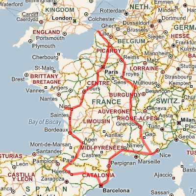

26 December 2006
2005 In Review
First thing about this travelogue. I've been pretty slack at updating (as per usual to be honest) that this one had to cover an entire year. Also, I've done something a little different. Rather than include images throughout - I've put the images up on myspace here:
http://davewasthere.spaces.msn.com/photos/
If the wrong photo album is displaying, you'll just need to select the one that says 'Photos from 2005'. The interface is okay, but it's probably not clear that the titles/captions of the images are underneath the slider control. So you may need to scroll down a bit to see them.
- Starting in the Philippines
- Racing in Madrid with FHM
- Back to Dubai
- Tori Amos
- Switzerland for work
- Money? I don't need no steenking money!
I've also been a bit slack at completing this as Liezl and I split up after six years together. I'm still figuring out whether I should be upset or happy about it. But it has been one of the reasons I've put this off for longer than I should have. Such is life...
Starting in the Philippines
It seemed as good a place as any to start the year. Liezl and I had spent the previous year in NZ, so this time it was the Philippines turn.
We arrived in the Philippines a few hours before midnight on New Years Eve, courtesy of Kuwait Airways. Because we didn't have much time, we just hired a car from the airport (A cardinal sin I know!) and drove straight out to Mabitac.
I have to say... New Year is a completely insane time in rural Philippines. It's a veritable feast of fireworks. Skyrockets, Labintador / 5 Star, Judas Belt, Roman candles, Watusi etc... The place just goes off like a war zone. To illustrate that, the news reported in the following days, that 6 people were killed and 35 wounded by stray gunfire alone that night. One little girl was asleep in her bed when a bullet that had been fired upwards came down through the roof and stuck her in the head. (She survived, but was incredibly messed up - as was evident by the very graphic television images)
That is another difference in the Philippines. The footage of deaths by fireworks, shootings, car accidents etc.. is really graphic. In fact, I think if it was in a movie, it'd probably get banned or at least rated R-18. But I guess it's better to show the consequence of certain actions rather than try and hide them. My tagalog is pretty poor, but I could understand enough to tell that the guy with stumps where his hands used to be was crying something along the lines "I was drunk and went and picked up this firework that hadn't gone off yet..." (The rest is predictable enough)
The graphic shots in the news each year apparently have reduced the number of injuries (although some sources say they haven't), but there still seem to be an awful lot of injuries. While I chaff at the restriction of freedom (No child growing up in New Zealand will experience the joy of blowing up hornets' nests with double happies any more, which is a shame) I have to wonder whether I'd prefer to retain those freedoms or try and protect people from their own stupidity but putting a blanket restriction on something like explosive fireworks. Spending time in the Phillipines is refreshing because these minor things are not yet restricted.
On reason Guy Fawkes is a stupid thing to un-restrict in New Zealand is due to the
weather. At least the remaining forest/jungle in the Philippines (anything that
hasn't been illegally logged) doesn't go up like a tinderbox if one stray skyrocket
gets into range. Anyone who remembers the fires, in November of every year, around
Wellington's Lower Hutt would see that skyrockets probably shouldn't be sold at
all back home. (But I wish it wasn't something that we had to legislate)
At the start of the year (Jan 6th) is the festival of the three kings. Technically, this is the actual birthday of Christ (Although I've read a couple of interesting
theories that figure it to be September 16th-ish). However, December the 25th was adopted by western churches
something like 400 years after Christ's birth (don't quote me on this). From memory it was some Roman dude who was secretly a Christian
who moved the date of the celebration so it fell on the same date as a couple of
common pagan rituals, one marking the winter solstice. If that's wrong, then who
cares... it sounds good enough.
The point is, Christmas-time is all about money in the philippines. And Three Kings is the mother of all money-grabbing. And Mabitac is no exception.
On Three Kings, everyone from the town gather in the plaza. Overhead, in the municiple hall, stand the Mayor Hon. Gerardo C. Fader, other local dignitries and possibly some prominent businessmen. After a bit of a speech, the people up in the hall start throwing coins (sometimes wrapped in a peso note of some denomination) down to the waiting villagers. The chaos is awesome.
Some of the more cunning towsfolk hold inverted umbrellas to try and catch as many coins as possible, but the coin-throwers tend to avoid them and aim the bulk of their monetary payload in other directions. It's like the most mega lollie scramble!
Another great site is the Miss-Mabitac competition. But apparently it's okay for me to stare at gorgeous 18 year old girls, since everyone else in the village is doing the same thing. :-)
{kind=link}
Another thing that is common around this time of year is the selling of coloured chicks to kids as pets. Now initially, I thought this was done by dipping them in food colouring. (Well, I did!) ...I thought that sort of explained why they all died so quickly. But no, it's a little more complex than that. I think the eggs are injected with food colouring at a certain stage and the colour is induced in the embryo. The reason they die so quickly is because they die of thirst. The kids sort of lose interest in them. Life is bloody hard in the philippines for humans let alone animals.
After Three Kings, a group of us went and hired a private resort in Calumba. It had two pools, four rooms, a pool table and a videoke machine (essential for pinoy parties) all for £100/night. Sure that might be a lot compared to local rate, but this place was massive. Basically, we just swam, ate and drank the whole time. Definitely a good way to relax!
After returning to Mabitac it was time to head off on another wee mini-trip, this time to Boracay.
I had a wonderful time in Boracay! The only downside (apart from having to leave it) was all the hawkers/peddlers asking me if I'd like a watch, boat trip, dive trip, massage or sail boat ride. I don't believe it's possible to walk more than 50 meters without getting asked. I just kept answering Meron na po (I already have one), Tapus na po (I've finished/already done that), Hindi na po (Politely No). Not that they got the point of course. The same guys would ask me every time I passed them. Although they did have a laugh at my accent (or the fact that I answered them in Tagalog at all?)
That aside, I loved the beach. Gorgeous white sand, beautiful warm water. You could swim any time of the day or night. I think I was still swimming into the wee hours of the morning most days. Stupidly I got a little burnt on the first day, so wore a t-shirt after that. (Slip, slop, slap you idiot!) I did have sunscreen on, but it wasn't water resistant - so immersing myself in water, then building a sandcastle wasn't the best idea I've ever had.
One thing I meant to take a photo of, was the incredibly bad wiring in the marketplace. It mad an ex-engineer like myself cringe with the hideous potential of it all. What is ironic, is a few days afterwards, there was a massive fire in that exact same area - funnily enough, caused by bad wiring...
Once we got back to Mabitac, Liezl fell ill. This time it was her turn for food poisoning. The only thing she'd eaten that I hadn't was a single oyster at a buffet in Boracay, so we sort of thing it was that. Fortunately she was more hardy that I was.. ..she was up and eating again only the next day (Although you could tell the edge was taken off her).
After discharging Liezl from the hospital, we then went to Villa Escudero. I'm not sure I'd recommend the place to anyone. It's very nice, you can go paddling in bamboo rafts, dine at the 'famous' waterfall restaurant, swim in the slightly dodgy pools, look at all the treasures in the museum.. But it's also very expensive for what you get. Still, it's only money...
Manila is always a good end to our trip. The shopping is good and the food is great. Went out in Malate to see live bands. (One was doing a cover of Bic Runga's 'Sway' I remember..) One dodgy taxi driver had hooked up a drill or some other motor to his speedo cable. He'd push a button and his speedo would race to over 200 kph for about 30 seconds or so every time. So we refused to pay more than we paid for a similar distance another time. (He wasn't happy, but I can be stubborn)
Racing in Madrid with FHM
On a whim, I entered for a competition for Sports Driver of the Year in the UK edition of FHM.
It wasn't until after I'd entered that I realised I'd entered after the closing date, so I never really thought much more about it until I received a phone call at work. Apparently I was short-listed for the trip to Madrid to races Vauxhalls at Jarama race track. After quick rush around work to make sure I could get leave for the following week I was a confirmed entrant, off to Madrid a few days later.
I met a couple of models dressed in FHM gears at the Airport and followed them to the meeting point. After checking in and going through to air-side, I met up with a bunch of guys who were looking through the latest magazine trying to spot the guys who were featured as competitors. Turns out none of those were actually competitors (possibly FHM just made them up since they've got quite aggressive publishing deadlines).
Short flight to Madrid (I sat next to the beautiful and funny Tillie on the way out... had a good wee chat), and off to the hotel for dinner. For some reason the restaurant though we only wanted to eat meat. We had forty guys (and other crew) who were served meat, but no vegetables... because someone had forgotten to order something to go with meat. Apparently the hotel thought we were a carnivore convention or something and didn't question the odd menu choice. They managed to rustle up some chips as well, but that was it for the night.
We had a day of doing four different driving events. I had a pretty shaky start (with almost the worst time) when I stopped at one point thinking I'd completely missed a turning, but managed to pull it back to finish up 4th at the end of the first heat. Doing a handbrake parking manouver between two parked cars was the most fun for me.
That night we went to Bernabeu stadium to watch Real Madrid win against Real Beatis 3-1.
At the end of the second heat, out of the 39 competitors (one didn't make it because he couldn't get the time off), I gained a place to come 3rd overall, which was good enough to make the final.
The final stage was just 4 driving events. And I've got to admit, I drove pretty poorly. Couldn't get to grips with the reverse selector in the Astra. My fault for driving automatic left-hookers for the past 7 years perhaps? The only event I got a good score in was the entertainment portion (a sneaky 5th event) where you had to entertain the trackside totty. It's only thanks to the Kiwi haka that I manage to pull anything out of that one too. Also, our scores were reset so it was only down to the days events.
That said, the event couldn't have been won by a nicer guy. And the funniest thing is, he almost didn't. Another guy actually drove the pants off everyone. Only he disgusted the girls with his seedy poem during the entertainment section. If he'd done something different he would have been a clear leader. (40 of us guys were pissing ourselves laughing though, it was funny as anything)
Our final night in Madrid was a yummy dinner and drinks at Bernabeu again. A few presentations and speeches etc... And it was all over.
I had a great time and loved doing burnouts in the VXR Monaro. And in a way, I'm glad I didn't end up on the podium with a shot at driving touring cars. It's something I'd have loved to have had the opportunity to do maybe 10 years ago, but I don't have the energy/passion/drive for it now.
The funniest moment of the whole trip for me was when we were in the bus and going under a bridge while Nicky (the organiser) was talking. Nicky asked if we could still hear her on the intercom as if the bridge would interfere with it somehow. Legend!
Back to Dubai
Liezl and I headed out to Dubai in April. The call of Hummous and Lamb was just too strong. (I was still gutted about having food poisoning and not being able to eat last time I was here)
We had some fun at the airport with Liezl's visa. Turns out Ethihad wouldn't let Liezl board, as her visa was for Dubai and not for Abu Dhabi and if you fly Ethihad, you actually clear immigration at Abu Dhabi, which meant that her visa for Dubai was useless. Fortunately I managed to convince them to let us board without a visa for Abu Dhabi, but that meant I had to buy Liezl a ticket on a plane from Abu Dhabi to Dubai. We only had a few minutes to organise that in Abu Dhabi, but it all went okay. (Apart from Liezl trying to take too much alchohol into Dubai and getting it confiscated)
Dubai has an insane number of vehicles on the road now. When I lived here 5 years ago there must have been half as much traffic or less. It's absolutely crazy now. I can't get over how long it takes to get from point to point now. It looks like the place has been a victim of it's own success. Also, I'm not sure it's possible, but the drivers have gotten more aggressive too. I had one local lady, sitting behind me in her massive 4WD, shooing me off the road because I was in her way. The fact that it was bumper to bumper traffic didn't seem to register to her.
Met up with Will (A mate I used to work with) at Scarletts for several pints. He might have some grey hair, but still looks like he could out-surf anyone 20 years younger. He's driving a TVR around now, which is a hell of a car. Not, perhaps, the most practical for heading down to Spinneys to do the shopping in, but definitely the thing for blatting out to Jebel Hafeet and back!
We also went out to the beach a fair bit. It's funny to see the Pakistan & Indian labourers come out for a perv at the ladies too. The few we saw had cameras wrapped up in jackets/newspapers so they could take photos of girls in their bikinis. (One, possibly Russian, girl was very popular) I know some of it is just a cultural difference, and some of it stereotyping, but it gives a bad impression. They'd hang around at the public showers too, just staring. Creepy...
There was quite good surf on the beach too. Enough to bodysurf a decent distance if you caught the wave right. The biggest difference about the beach that I noticed was the view. It's been ruined by a ton of land-reclaimation ships that constantly spew sand/earth during the island building process. But the end result should be spectacular!
I happy to see that my Arabic language skills haven't totally deteriated. I'm a lot worse than I used to be, but I can still read Arabic (enough to read transliterated signs at least or a few of the arabic words I haven't completely forgotten) Still, most of the trip involved eating, which seems to be my new hobby. It blows me away how good the food can be out here. Also, the sheer number of waiters a restaurant can comfortably sustain. The economic model is completely different in the Middle East than say the UK.
For instance, we went and ate at Arous Dammascus, where no less than 10 waiters were serving about 20 diners. A restaurant in the UK could probably only afford two or three waiters at most for a similar turnover. But the labour costs are so much cheaper here. It's similar in the Philippines too. Service is fantastic!
One of my biggest disappointments was to find out that Nelson Casili was no longer performing at Jule's bar! Now, it's all rumour, but I heard that a son of a certain famous family in Dubai (I'm not mentioning the name in case this is untrue), went to Jule's bar and was offended and had him deported. If there is any truth to that then I'd say Dubai has lost one of it's greatest assets. Nelson was/is a fantastic performer! My favourite (along with so many other people) was to sing along with his rendition of Hotdog's 'Manila'.
Instead I caught fellow Kiwis 'Native Soul' playing at Rock Bottom. They put on a great show, but I realised that I'm getting too old. (That's what happens when the music is too loud right? You are too old?)
Actually, I'm happy to hear loud music. But I'm a pretty fussy patron when it comes to the quality of sound. (It has to be clear and un-distorted, otherwise I find it painful)
Anyhow, that was Dubai. Another couple of oddities were the two Emirati local lads who giggled/whistled/shook their fingers at Leizl and I when we had a quick peck in public. (PDA - Public display of affection is a crime in Dubai, although you have to be pretty seriously displaying affection to get busted for it) And the other cool site was the two year old, swilling red-bull at 11:00pm in a car that we passed. I guess her parents don't try and enforce any sort of bedtime then. :-)
Tori Amos
Mucking around on 43things I saw one thing I'd love to do: See Tori Amos live
Since I was due to travel to London on a course for work (For a Design Patterns and .Net best practices course) I decided to see if by some fluke she was playing. And blow me down - she was! In the Apollo at Hammersmith. So I had to go and see her. (By see, I mean listen to her live... but 'see' still sounds like the right word. Geez English is weird)
It's impossible to do the woman justice using words (at least, using my words), but I thought she was fantastic. I pretty much buy every album when it comes out. (Although I did wait until Martian Records stocked 'The BeeKeeper' at £9.99 rather than the extortionate £18.99 that Virgin/HMV were asking for the same album - even if it did have a DVD)
I would link to www.toriamos.com (Epic Records) here, but they use pop-ups, which I detest, so I've decided against it. However all her old albums were released under contract with Atlantic Records - Official site: www.tori.com
Switzerland for work
So far, if there is one place that reminds me of home, or at least the South Island, it's Switzerland.
We'd had a bit of a reshuffle at work (one of many) and that required the three of us (who were based in the UK) to head out to Zug to meet the rest of our new European team. Turns out, it was a great trip.
I particuarly like the food in switzerland. They just seem to do it so much better than anyone else! Only one of our meals was 'average'. And even that could be forgiven since it was on a boat that was cruising the lake in Zug.
My only down-side to the trip was not being able to sleep. I didn't sleep for almost the entire week I was there. (Almost a wreck by the end of it) I still don't know what caused it. Very strange!
Money? I don't need no steenking money!
Well, actually I do need money, primarily to pay the mortgage, but I'd run out of leave so I asked work to give me a month off leave-without-pay, so I could go travel. And just a few short months later my request was approved. (Insert appropriate blood out of stone comment here)
I'd managed to get all of September off, so I could cruise around France and Spain in style. I'd orginally considered trying to do some of Italy as well, but looking at the distances and the number of days involved, it just wouldn't have worked out. (Would have felt like one long race)
Being a little bit anal, I didn't just wing the whole trip. I hunted around for reasonable places to stay (allowing some flexibility in case I wanted to change my plans) and booked a bunch of places. I also put a whole bunch of waypoints on my GPS too. (They'd come in very handy later on!)

The route travelled!
My first stop after the ferry was to head to Troyes for a couple of days. It's a little east of Paris and is full of amazing architecture. I just wandered around enjoying the sights. It's meant to be pretty famous for art too, but I didn't get past exploring the streets and restaurants.
After leaving Troyes I was just making my best speed towards the Cote d'Azur and a little place call Le Dramont. I saw some incredible dog-fighting above me by a few jet aircraft. They looked like some sort of Mirage, but my aircraft recognition isn't the best. (Could spot a skyhawk or Aermacchi easily enough I guess)
I mostly took quiet little roads (rather than the autoroutes). Mostly because the scenery is a lot better and they tend to be more fun to drive as well. Also, there are plenty of great little food stops. Little hotels or restaurants that serve the most gorgeous food. I remember one lunch just after Dijon (I wasn't really hungry in Dijon, which is probably a criminal offence in France) where I bought faux steak aux frites et salad verte et fromage et 25cl pichet de vin rouge. Sort of my staple diet while in France. I sat outside (under cover) with the rain gently pitter-pattering away, revelling in the taste of this simple yet delicous dish. (It's making me hungry as I write!)
It took me a couple of days driving to get down to the Cote d'Azur. I'd found a great place called Le Dramont and stayed in a hotel called Auberge Provencale. (I throughly recommend them)
The evening that I arrived was pretty wet and horrible. But fortunately the next day it was gorgeous and sunny, so I spent the next couple of days on the beach just swimiing, building structures out of the pebbles/stones near the water and soaking up the sun (careful not to burn though). Also went for walks to build up an appetite, since the food was fantastic no matter where I ate.
Liezl was arriving in Nice by plane, so we were going to spend a couple of days there before making our way down to Costa Brava and then on to Barcelona. I drove to Nice's airport to pick her up and we heading into town for some food. On the way back to the car after the meal I saw the most awesome thunderstorm in my life. It wasn't that the storm was so powerful - it was just that this is the best view I've had of one from the ground. (Thunderstorms from the air are pretty impressive, but the scale of them gets lost with altitude)
This storm was out over the mediteranian and completely filled my peripheral vision. Each lightning discharge lit the sky with jagged white cracks and a huge thundering sound. I was like a kid seeing his first massive fireworks display. Wow!
The next day the weather was clearer (nothing brilliant, but nice enough to spend some time in the slightly-too-cool pool). An English Lotus club had stopped overnight at the hotel as well, my boxster feeling completely outnumbered by the Esprits. We spent a couple of days in Nice and were meant to head to Montpellier for our next stop, but I'd enjoyed Le Dramont so much I rearranged things so we could spend another couple of nights there.
Our next stop was Empuria Brava. After Le Dramont, Costa Brava seemed completely soul-less. Or more specifically Empuria Brava is... Nearby Cadaques makes up for it though. (Salvidor Dali reputedly said that it is the most beautiful village in the world.) I guess the reason for the lack of soul is that the place has been made especially for tourists. Sure the beach was nice (at least it had sand) and the food was pretty bloody good (and pretty cheap for what it was), it was still vaguely unsatisfying.
We had an uneventful, and relaxing, couple of days just chilling on the beach before heading to Barcelona. We'd decided to stay a bit out of town (in Montmelo) since by all accounts it's crazy to try and drive in Barcelona. But we had some fun getting a room that a) had working a/c and b) that was vaguely clean and had a toilet in working order. We settled on the third room we tried (with it's attendant faults) just so we could have a short rest before blasting into town for dinner and drinks.
One thing that Barcelona has a lot of is graffiti. I love the works of Banksy, but a lot of the stuff in barcelona is either bombing or just rubbish tagging. I definitely prefer graffiti/stencil-art with a more political bent. But some of the bombing was pretty well done.
The next day, after getting up at the crack of lunch, we did the typical wander around and look at all the touristy stuff. One thing I was very aware of is how good the Spanish dress. I'm looking like most of the other tourists in my t-shirt, shorts and trainers, yet Spanish men on the whole dress pretty sharp regardless of temperature. (My excuse is I'm not aclimatised... not having a good sense of style is probably another reason... lol)
We tried to eat dinner back in Montmelo, but were struggling to find a restaurant that wasn't a tapas place. Apparently, there was only one restaurant that would fulfill our needs. Not speaking much Spanish (and the Spaniards I met didn't speak English) I ended up getting directions in French from an Italian (who spoke Italian, French and Spanish - perhaps English too, but he was taking the piss? lol). Fortunately my French was up to the task and we managed to get a nice meal to chow down on. Don't get me wrong here though, I love tapas... but we'd been eating tapas for ages and just wanted a nice big steak to munch on! Only bugger is, when they served the meal, Liezl's lomo had turned into pollo (chicken instead of pork) since they'd run out, but didn't bother telling us.
The next day was shopping day. Just went to this fantastic (but empty) mall and splurged a bit on clothes. I rarely shop in the UK, but I alway manage to buy a few things for myself when I'm overseas. I'm not sure if it's just the mood I'm in, or whether I have a valid reason like I don't like to buy stuff that other people will have. (I'm not that fussy really)
After a few days in Barcelona, it was time to head off to the mountain town of Jaca, south of the Pyrenees mountains. Unfortunately, while windy mountain roads were a lot of fun when I was on my own and driving down to Southern France, apparently it isn't as much fun if you are a passenger. So we ended up making terrible progress along our initial route which took us close to Andorra. So instead I had to cut south a lot further than planned so we could take the straigher/faster roads. As it was it was pretty late when we arrived at Jaca. Also, my GPS wasn't really up to the task of finding our hotel. The waypoint got us most of the way there though, which was the whole point.
Next morning Liezl finally managed to have her chocalat con churros (which were slightly disappointing) and I just had pain & cafe. I also needed to buy a t-shirt since we were running out of clean clothes. Laundrettes were pretty commonplace in France, but were bloody hard to find in Spain! After getting some supplies we headed off to Torlos and caught a bus up to Ordessa parc. Liezl isn't huge on outdoorsy stuff, so a few hours in and back was about all we could manage. I may have to come back on my own to hike the GR10 or GR11 trails.
Our meal back in Jaca was pretty funny. After some translation fun, managed to order the veal steak (again, mostly in French since my Spanish is non-existant... I must remedy that). But when it came out it was Bleu... and I mean Bleu. Fortunately I like my steak very rare, but this was Rare! So I cut a sliver and had a mouthful of some incredibly nice (but rare) veal. That's when the waiter brought out an incredibly hot ceramic dish for me to cook my steak on. Lol!
The nice thing about the hotplate, is I could share my veal with Liezl, she could have her's à point (medium-rare) and I could cook mine saignant (rare).
Driving back to France, we took the longest tunnel I've ever been in. I think the speedlimit was 80kph and we must have spent at least 6 minutes driving through the tunnel. That's something like 5 miles (8km) long. Now, I know Norway has the longest tunnel you can drive through that is about 3 times as long, but even so this was damn impressive considering the longest tunnel I've seen in NZ is the one from Christchurch to Lyttelton that is something like 2km long.
Driving to La Rochelle went pretty smoothly. It was pretty relaxed with the top down most of the way. I was a bit worried I'd gotten a ticket when overtaking a slow utility vehicle. A french policeman came out from under a shaded tree and had a look at my numberplate as I drove past. I couldn't have been doing more than 10-15 kays over the limit (on an almost empty road) but I figured it was just my luck. But a year on I've not heard anything, so all is good. I wasn't overly happy at the time though. :-)
Finding our hotel in La Rochelle was a little stressful. It was one of the two hotel that Liezl had booked and I didn't have a waypoint (and she didn't have directions). After struggling with the one way system for 20 minutes, we ended up parking and walking into the center to find where is was we were staying. Parking was a bit of a nightmare, but I managed to navigate a route to get the car to the hotel so we could unload our bags, then found somewhere not too far away to park for the night.
Our mission the next day was to find a landrette since we were in desperate need of clean clothes. The town market was open with all the fresh fruit, veges, fish and meat (mostly fish) you could shake a stick at. There is a lot to be said shopping the provençale way - just the freshest food, one day at a time.
We spent a couple of days just eating/walking/drinking/sleeping before heading to our last stop before home. Paris.
I'm not going to go on about Paris too much. Some of the hilights were; Liezl spotting someone with a Starbucks mug and desperately wanting to find the shop because she was pissed off with small coffees all the time (we didn't find it). Eating at an amazing italian place, served by an Egyptian waiter and a french flair to the food. Cycling around central paris with a bunch of whooping Americans (Good laugh). Picnicing in various places with all the great food that is available in almost every shop (The French get it SO right!). Pretending not to be able to understand english to all the hawkers (or whatever they were) who tried stopping us as we walked around (I only spoke in Arabic or Tagalog in reply).
One thing that has changed is all of the defences around the American embassy. The place looks pretty fortified now. It might not stop a motorcycle packed with explosives (Although the armed guards probably would), it is still a good indicator of how sad the world is that we currently live in. Not that I think it is more dangerous than at any other time... but there is more of an aura of fear than in any time that I'm aware of in the last 3 decades.
Leaving Paris was one of the longest drives of the whole trip. We'd left it a bit late and managed to hit rush-hour. So it took a lot longer than planned to get to Dunkerque. We ended up stopping in Arras for our last dinner in France at a restaurant called Eurostar. Fortunately the food was fantastic. Unfortunately, the wine was equally good - but I still had a wee way to drive before we got to our hotel so couldn't really appreciate it the way I would have liked. Two kiwi ladies were talking at a table next to us. Normally, I'd have butted in and said 'Hello', but this conversation sounded pretty deep and I didn't want to interrupt.
Finding our hotel in Dunkerque was a little bit of fun too. We were incredibly late (and the hotel didn't have 24 hour check-in). But I managed to jimmy the doors and wake the manager :-) who grumpily gave us our room. What I was most proud of, is I managed to explain how sorry I was that I was late, but we had a reservation for a room - all entirely in French. Sure, gramatically I reckon it was pretty poor, but it still made me chuffed to bits. I was a little slow when she asked if I'd like breakfast... but I managed that in French too.
The next day, our mission was just to get as much wine as could fit in the boxster, as well as find a decent breakfast. Unfortunately we really struggled finding somewhere good to eat and ended up getting McDonalds. (That's just wrong) But honestly, the area we were walking around just didn't seem to have anything that served breakfast. Were we still in France? Fortunately, we were more successful on our wine mission. Only managed to get about 20 bottles of wine into the car, but that's not bad going considering how full it was in the first place. After that it was just the ferry and the last bit of driving to get home...
We had one more trip to the Philippines at the end of the year (which went over New Years as well), but this travelogue has gotten long enough!
Thanks for reading, and I'll catch you next time.
Dave.